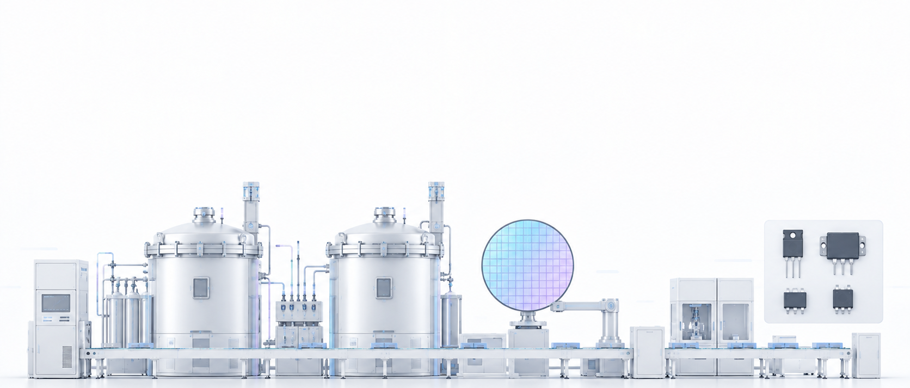
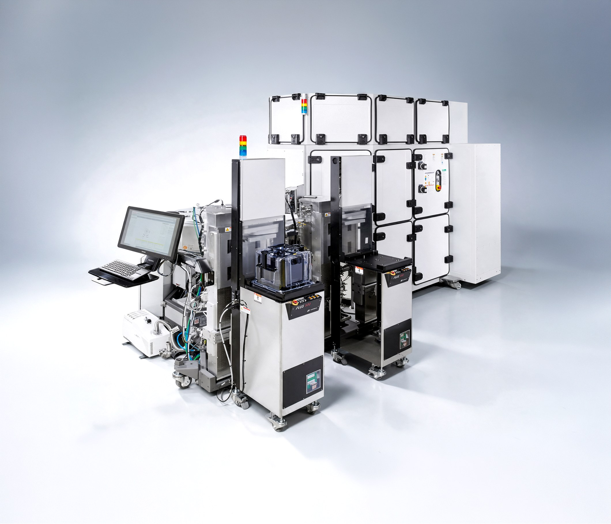
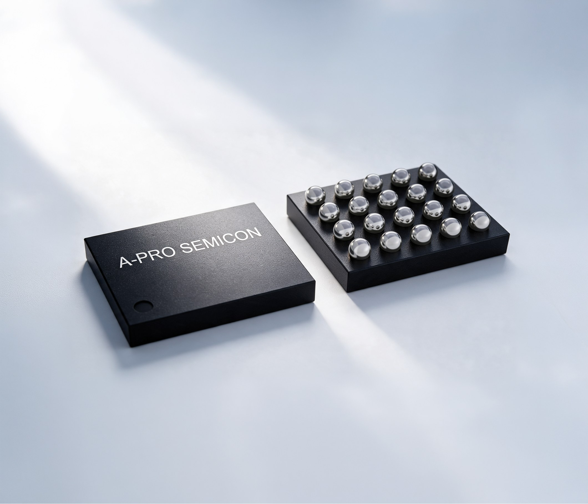

질화갈륨(GaN)을 기반으로 전력반도체와 RF반도체를 설계, 생산합니다. 국내 최대 규모의 8인치 EPI 양산 체계와 칩 설계 역량을 갖췄습니다

GaN Epi-Wafer
GaN Power Device
에이프로세미콘



고품질 질화갈륨(GaN) 에피택셜 성장 기술로, 차세대 전력반도체의 핵심 소재를 공급합니다.
AIXTRON社 G10, Veeco社 Propel 등 첨단 MOCVD 장비를 기반으로, 8인치 대면적 GaN Epi-Wafer의 대량 양산 체계를 구축 하였습니다. 이를 통해, 고객이 필요로 하는 물량을 안정적으로 공급할 수 있는 생산 역량을 갖췄습니다.
균일한 에피층 두께·조성 제어와 차별화된 기술 개발로 고효율·고전력밀도 전력변환을 구현합니다.
고주파·고속 스위칭 특성이 우수한 질화갈륨(GaN) 전력반도체를 기반으로 전력변환 효율을 극대화하는 차세대 전력소자입니다.
낮은 스위칭 손실과 우수한 전력밀도를 바탕으로 EV 충전기, 신재생에너지 인버터, 산업용 전원장치 등 고효율 전력변환 시스템에 최적화된 소자 라인업을 제공합니다.
GaN Power Device는 전력 손실과 발열을 줄이고 수동소자 및 냉각 시스템의 소형화를 가능하게 하여, 전력변환 시스템 전체의 크기와 무게를 절감하고 에너지 효율을 향상시킵니다.
질화갈륨(GaN) 기반의 차세대 화합물 전력반도체 및 핵심 소재(에피웨이퍼)를 개발·제조하는 전문 기업입니다.
경북 구미 제5국가산업단지 공장에 독일 엑스트론(Aixtron)사의 최신 MOCVD(유기금속화학증착기) 장비를 도입하여 국내 최초로 8인치 양산 체계를 구축했습니다.
전력반도체 분야뿐만 아니라 무선주파수(RF) 반도체용인 'GaN on SiC' 에피웨이퍼 시제품 개발에도 성공해 방산, 6G 통신, 위성 시장 진입을 추진 중입니다.